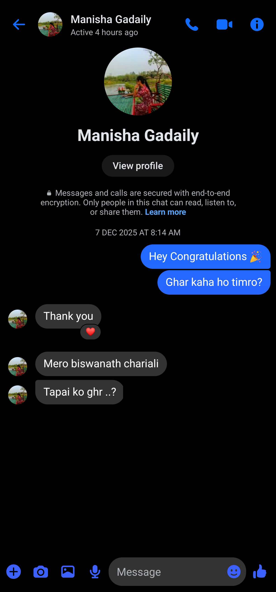
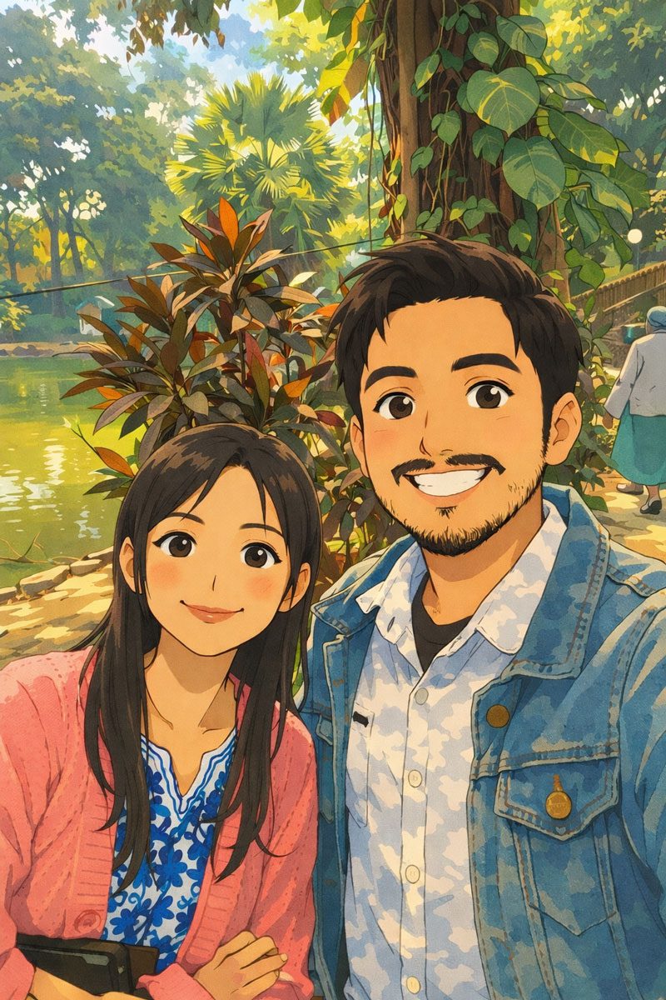
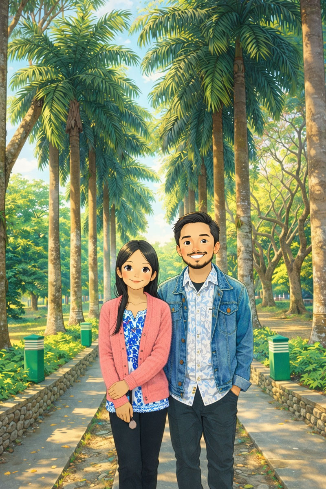
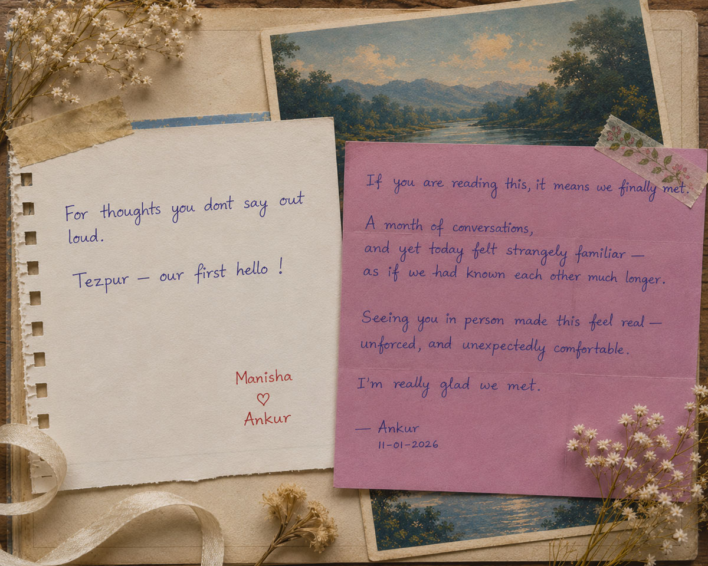
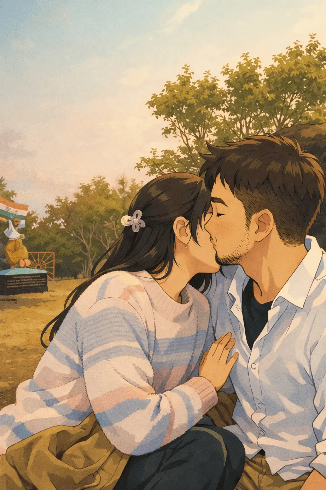

Our Journey
From strangers to inseparable.
This story was written for someone special.
To The Girl,
Happy Birthday, Manisha.
I have made something for us.
A private love archive
By the grace of Mahadev,
A journey that began on
7 December 2025
From strangers to inseparable.
A story of love, growth & us.
Little things that mean everything.
Because our story never ends.
7 December 2025 → 11 January 2026

It started with a simple congratulations. Not a grand introduction. Not a carefully planned message. Just a few words for a new beginning.
At that moment, we were just two strangers learning where the other lived. Neither of us knew how important those conversations would eventually become.
Days passed. Messages became conversations. Conversations became routines. And routines became something we looked forward to.
Facebook. Then Instagram. Then phone calls. Without realizing it, we were slowly becoming part of each other's day.
Good mornings. Good nights. Small updates. Random stories. The kind of things you only share with someone you trust.
31 days. Hundreds of messages. Countless conversations. One question remained. What would it feel like to finally meet?
11 January 2026 · Tezpur
220 kilometers.
A bike ride.
An excited heart.
And a destination
I had been waiting
a month to reach.
She thought
it was an ordinary day.
Barnali knew otherwise.
When I reached Cole Park,
Barnali came out
to receive me.
Manisha stayed inside,
waiting near the fountain,
wondering why Barnali
had suddenly gone outside.
My heart was racing.
I tried my best
to look calm.
She looked nervous.
And for a few seconds,
none of us really knew
what to say.
A chocolate.
A smile.
A hello.
The first few words.
And suddenly,
everything felt easier.

Our first photograph together.
A memory frozen in time.
We sat together
facing the water.
Talking.
Listening.
Learning.
No rush.
No plans.
Just enjoying
the moment.
Soon the three of us
were walking around
the park.
Talking as if
we had known each other
for much longer.

The place where two strangers became real.
Lunch.
Stories.
Laughter.
And a day that felt
far too short.
Before leaving,
I handed her
a small notebook.
And a letter.

A small notebook.
A handwritten letter.
Two simple things
that carried far more
than paper and ink.
She didn't discover
the letter immediately.
But when she finally did,
the joy on her face
made the journey
worth it.
When I rode back home,
I didn't think,
"She is the one."
Trust.
Sometimes it arrives quietly.
Long before love realizes
it is already on its way.
8 February 2026
One month had passed.
Messages had become routines.
And now,
we finally had
an entire day together.
This time,
there was no surprise.
No nervous introduction.
No waiting near a fountain.
Just excitement.
For the first time,
I visited her room.
Fresh air.
Long conversations.
A day that felt
beautifully unplanned.

More walking.
More talking.
More laughter.
Not because we agreed
on everything.
But because we understood
what mattered
to each other.
The ride back home
felt shorter.
Because my thoughts
were still with her.
Sometimes,
understanding arrives
before certainty.
And on that day,
we felt alike.